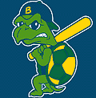

1
The Oracle of Bacon at Virginia
http://www.cs.virginia.edu/~bct7m/bacon.html
With this site, University of Virginia students Brett Tjaden and Carl Wasson have established themselves as the world's foremost authorities in the Kevin Bacon Game. For those unfamiliar with this new national pastime, the game requires players to connect actors and actresses to Bacon, through a film chain, in as few steps as possible. For instance, Jesse "The Body" Ventura, has a Bacon number of two. He was in Ricochet with John Lithgow who was in Footloose with Bacon. Allegedly 17 actors have attained a Bacon number as high as seven, but good luck naming them. In over an hour, the best the IU staff could do was four with Swede Inger Nilsson of Pippi Longstocking fame. For those who prefer Pumping Iron to Tremors, there's also an Arnold Schwarzenegger version of the game. (Link to this month's Spotlight on page 66 for even more Bacon).
Mondrimat
http://www.stephen.com/mondrimat/
It happens each and every visit to the Museum of Modern Art. While feigning appreciation for the masters, the feeling that you can create a work as good, if not better, than those by Pollock or Rothko becomes unshakable. Well, here's your chance to prove it. The Mondrimat is the next best thing to painting your own famous masterpiece. The site gives users a chance to experiment with "space, color and visual rhythm in accordance with the theories of Piet Mondrian." A simple program at the site allows for the manipulation of blocks of color and the creation of a unique masterwork. It's an excellent time-wasting diversion and a great way to pretend you're cultured.
Computer Virus Myths
http://kumite.com/myths/
Although there was no mention of the biggest computer virus myth of all time -- see Independence Day for that one -- virus expert Rob Rosenberger's site is a fantastic primer for separating cyberpathogen fact from fiction. Among the myths dispelled at the site: "Viruses can hide inside a data file or in electronic mail or in the text of a worldwide Web page" and "antivirus software will protect me from viruses." A must-visit site for anyone who has spent sleepless nights worrying about the "Good Times" virus erasing their résumé or collection of Groundskeeper Willie sound bytes.
The Light Factory
http://lightfactory.org
The Light Factory is a site to behold with its displays of works from commissioned artists, writers and photographers nationwide. All works are housed in permanent and temporary exhibits, and a map feature on the site helps you navigate through the extensive gallery with its chat rooms and special showings. Highlights include a "high-tech" Catholic confessional where you can spill your sins and an interesting photo treatment that takes family photographs from the early 20th century and superimposes them onto assorted backgrounds. The site is visually stunning and well-designed, but you'll want to upgrade your browser before visiting: Shockwave features are recommended, as well as a number of other plug-ins for full use of the site.
Terrence McKenna Land
http://www.intac.com/~dimitri/dh/mckenna.html
Terrence McKenna Land is the Mack Daddy of Web sites. From memes to mushrooms, McKenna is a guru writer and speaker on all matters metaphysical and ethnopharmacological. The site immerses the reader in McKenna's world of writings, teachings, interviews, speeches and psychedelic experiences. With the mounds of interesting content, McKenna Land, not Disneyland, may very well be the greatest place on earth. A scattering of trippy and bizarre images help to further dress up this text-heavy site.
The Onion
http://www.theonion.com
You can have your New York Times and CNN, but when it comes to news, there's no substitute for the Onion, a Madison, Wisc.-based satirical weekly that recently made its electronic debut. Note some recent headlines: "World's Oldest Hippie Has World's Grossest Feet," "Assistant Manager to Assist in Management" and "Local Student Scores Killer Couch." In addition to the unique take on worldly news, the weekly updates include alternative comics like Jim's Journal and Red Meat, odd weather maps, the racy advice column "Savage Love" and hilarious info-graphics. Truly inspired.
Ooze
http://www.io.com/~ooze/
Holy cow, this site is subtitled the "Journal of Substance, Wit, and Dangerous Masturbatory Habits." More specifically, it's a quarterly digital humor zine that can be nasty at times, but almost always hits the funny bone. Their hard-hitting (and more often than not completely fictionalized) journalism examines vampire role-playing games, the hallucinatory effects of staying awake for three days, why angels are so damn popular, lesser-known Ben & Jerry's flavors, phone numbers to prank, deathstyles of the rich and famous and more. The zine's mascot is a baby with a fork stuck in its head, so speak quietly and make no sudden movements around these people.
DineNet
http://www.menusonline.com
"Where do you want to go tonight?" "I dunno. Where do you want to go?" Stop suffering from blind date restaurant paralysis. DineNet has the power to quell your interminable waffling in the face of having to make a dining decision by arming you with nearly 2,000 DineNet entries. Serving the metropolitan areas of Atlanta, Boston, Chicago, Los Angeles, New York, Philadelphia, San Francisco and Washington, D.C., the site lists restaurants by neighborhood and cuisine. You can find out whether or not a place is romantic or bustling, if it takes American Express, if reservations are needed, and most importantly, if Athenian chicken is served.
An Appalachian Adventure
http://www.nando.net/AT/ATmain2.html
Last year, five journalists from five different newspapers set out to hike the nation's most famous footpath, the 2,158-mile Appalachian Trail, from Georgia to Maine. An Appalachian Adventure chronicles the group's arduous journeys and the many difficulties they had to overcome, both natural and man-made. If after reading the reporters' accounts, you want to undertake the 31-week journey yourself (According to the site: "since the trail's completion in 1937, only about 3,000 people have through-hiked it") there's a complete hiker's guide at the site plus links to other Appalachian Trail pages.
Minor League Baseball
http://www.minorleaguebaseball.com
 From the Albuquerque Dukes to the Yakima Bears, everything you need to know about minor league baseball is collected at this official site. Results from games played across the country are posted daily so that fans can keep up with their beloved Lansing Lugnuts, even if living in Rancho Cucamonga, home of the Quakes. The mascots alone (Boll Weevils, SeaWolves, Manatees, etc.) are reason enough to love minor league baseball and this site.